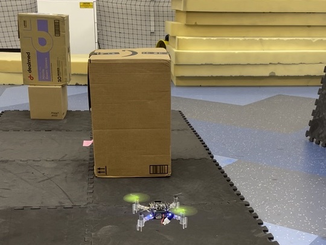

Crystal Zhou
I'm a graduate researcher in Mechanical Engineering at Carnegie Mellon University, working in the Robotic Caregiving & Human Interaction Lab at the Robotics Institute.
My research focuses on shared autonomy and robot learning — how humans and pretrained robot foundation models (e.g. vision-language-action policies) can work together so that robots stay robust with minimal human input. Previously, I worked on autonomous flight controls at Lockheed Martin and studied spinal reflex modulation in the NeuroMechatronics Lab.

News
- Aug 2025 Joined the Robotic Caregiving & Human Interaction Lab at CMU RI.
- Jun 2025 Started as a Flight Controls SWE intern at Lockheed Martin (VISTA / VENOM).
Research
I'm interested in human-robot interaction, robot learning, and control. Representative papers are below.

Crystal Zhou, et al.
Under review, 2026
Pretrained vision-language-action policies are brittle when the scene shifts out of distribution, and full teleoperation is tiring. SAPS lets a human steer a pretrained VLA by blending their real-time commands with the policy's own actions, without retraining or changing the model. Evaluated in simulation, on a real robot arm, and in a user study, it recovers most of the success lost to out-of-distribution changes while needing far less human input and effort than teleoperation.
Crystal Zhou, et al. (with Toyota Research Institute)
Viewpoint
A viewpoint arguing that shared autonomy should be treated as a first-class design principle for robot foundation models.
O. Refy, Crystal Zhou, et al.
Society for Neuroscience Annual Meeting, 2024 (PSTR076.14)
A human study analyzing H-reflex suppression during asymmetric gait.
Projects

Crystal Zhou, Mason Stark, Katherine Horng, Qihan Wang
Control Systems Integration, CMU
Small drones have to dodge obstacles in real time using only lightweight onboard sensing. We used control barrier functions (CBFs), which define a safe set and solve a small quadratic program (CBF-QP) each step to minimally adjust the commanded velocity so the drone never leaves it. We ran this on a Crazyflie, which detects obstacles with its Multi-Ranger deck and estimates its own motion with an optical-flow deck.
I led the hardware side, building on Tayal et al.'s collision-cone CBF (C3BF) code. I wrote the Crazyflie interface, which streams state estimates and Multi-Ranger readings over the radio and turns them into obstacles. I also wrote the controller: a 3D C3BF over the drone's 12-state dynamics, solved each step as a QP over velocity and yaw-rate commands. To make it hold up in real flights, I added obstacle memory, a slack variable to keep the QP feasible, velocity limits, and an escape maneuver for when the drone ends up inside a collision cone. On hardware the drone follows a wave-like reference path while avoiding obstacles. In PyBullet simulation, the team added a control Lyapunov function (CLF) for position tracking and extended the barrier to moving obstacles. We compared CLF-CBF against MPC + CBF on a 20-scenario benchmark measuring success rate, time to goal, smoothness, tracking error and control effort.
The biggest lesson was the sim-to-real gap. Most hardware failures came from sensing, not control: the Multi-Ranger only looks along four axes and can miss obstacles off to the side.

Emmanuel George, Crystal Zhou
Intro to Deep Learning, CMU
LLMs can reason about design, but raw CAD geometry (face normals, areas) means little to them. We train graph neural networks to label every face of a CAD part with its machining feature (pocket, through hole, step, and so on), so that an LLM-based design-for-manufacturing agent can reason over semantic labels instead of raw numbers.
On MFCAD++ (59,665 parts, 25 classes), we compare a hierarchical GCN baseline with a hierarchical GraphSAGE across three feature sets of increasing richness. GraphSAGE with UV-sampled surface normals reached 85.0% accuracy and 0.785 macro F1, compared with 0.338 F1 for the GCN baseline. Adding facet-level hierarchy gave GraphSAGE its largest gain but actually hurt GCN, which suggests that hierarchical aggregation only helps when the model keeps each face's own features. Errors cluster at feature boundaries, and open features like through-steps and slots remain the hardest to recognize.
Experience
- Graduate Research Assistant, Robotic Caregiving & Human Interaction Lab, CMU Robotics Institute 2025 – present
- Software Engineer Intern, Flight Controls, Lockheed Martin Aeronautics Summer 2025
- Technical Project Management Intern, Lockheed Martin Skunk Works Summer 2024
- Undergraduate Research Assistant, NeuroMechatronics Lab, CMU Spring 2024
Education
- M.S. Mechanical Engineering, Carnegie Mellon University 2026
- B.S. Mechanical Engineering & Biomedical Engineering, Carnegie Mellon University
Misc
Co-captain of the CMU NCAA DIII Varsity Women's Tennis team; All-American in singles and doubles (2021–2023).